Build a three-tier campus network end to end — switching, IPv4/IPv6 addressing, OSPF routing, network services, security, and management — on a single topology with an edge router to an ISP.
Build a three-tier campus network (access, distribution, core) with an edge router to an ISP, end to end:
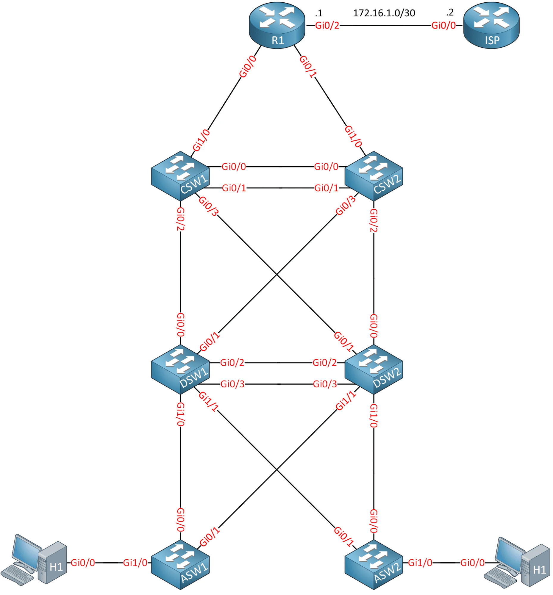
| Layer | Devices | Role |
|---|---|---|
| Edge | R1 | Router to ISP, DHCP server, NAT, NTP source |
| Core | CSW1, CSW2 | Layer 3 core switches, static EtherChannel between them |
| Distribution | DSW1, DSW2 | Layer 3 SVIs for all VLANs, HSRP, LACP EtherChannel between them |
| Access | ASW1, ASW2 | Layer 2 access switches for hosts and phones |
| Hosts | H1, H2 | Linux hosts in VLAN 10 |
| ISP | ISP | Upstream router (not modified); hosts the 1.1.1.1 server |
| VLAN | Name | Max devices |
|---|---|---|
| 10 | CLIENTS | 100 |
| 20 | VOICE | 40 |
| 30 | PRINTERS | 12 |
| 40 | MANAGEMENT | 6 |
On DSW1, DSW2, ASW1, and ASW2:
vlan 10 name CLIENTS vlan 20 name VOICE vlan 30 name PRINTERS vlan 40 name MANAGEMENT
H1 and H2 connect to GigabitEthernet1/0 on their access switch and belong to VLAN 10:
interface g1/0 switchport mode access switchport access vlan 10
GigabitEthernet0/2 on ASW1 is prepared for a computer in VLAN 10 with an IP phone in VLAN 20:
interface g0/2 switchport mode access switchport access vlan 10 switchport voice vlan 20
The access layer negotiates the trunk dynamically:
interface range g0/0-1 switchport trunk encapsulation negotiate switchport mode dynamic desirable
The distribution layer builds the trunk statically:
interface range g1/0-1 switchport trunk encapsulation dot1q switchport mode trunk
The links between DSW1 and DSW2 are bundled with a negotiation protocol. Company policy rules out proprietary protocols (PAgP), so LACP is used. DSW1 actively negotiates and DSW2 only responds.
DSW1:
interface range g0/2-3 switchport trunk encapsulation dot1q switchport mode trunk channel-group 1 mode active
DSW2:
interface range g0/2-3 switchport trunk encapsulation dot1q switchport mode trunk channel-group 1 mode passive
show etherchannel summary — Po1 is up as a Layer 2 LACP bundle:
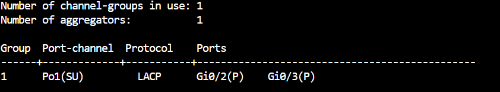
The links between CSW1 and CSW2 are bundled with no negotiation protocol, as a routed (Layer 3) port-channel:
interface range g0/0-1 no switchport channel-group 1 mode on
Po1 is up as a Layer 3 bundle (RU) with no protocol:
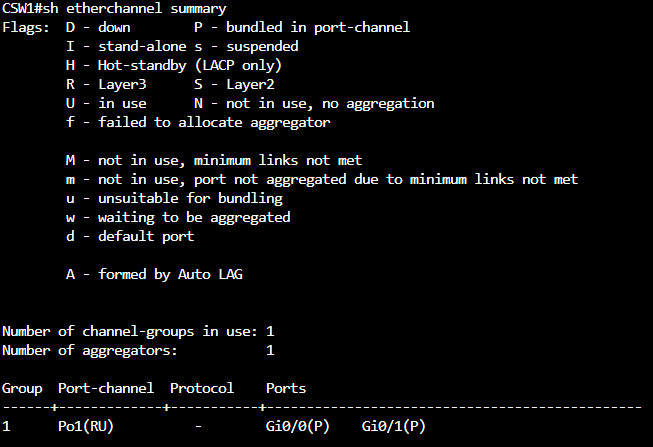
Use the fastest option that still calculates a tree per VLAN — Rapid PVST+:
spanning-tree mode rapid-pvst
DSW1 is the root bridge for every VLAN, and DSW2 takes over if DSW1 fails.
DSW1:
spanning-tree vlan 1,10,20,30,40 priority 0
DSW2:
spanning-tree vlan 1,10,20,30,40 root secondary
DSW1 holds priority 0 for every VLAN:
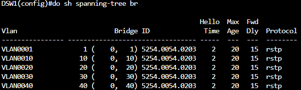
DSW2 holds priority 28672 as the secondary root:
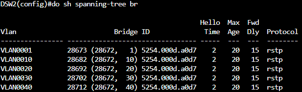
Hosts boot in seconds and should forward traffic immediately instead of waiting on convergence. On the access switches:
spanning-tree portfast default
To stop a malicious host from influencing spanning tree, an edge port that receives a BPDU goes down immediately and recovers on its own after 10 minutes:
spanning-tree portfast edge bpduguard default errdisable recovery cause bpduguard errdisable recovery interval 600
ASW1 Gi1/0 is in PortFast edge mode with BPDU Guard enabled by default:
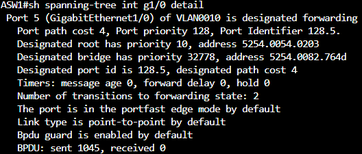
Errdisable recovery for bpduguard is enabled with a 600-second timer:
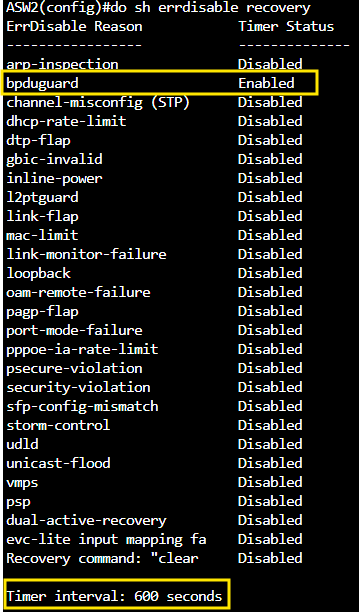
Company policy sets custom STP timers: hellos every 3 seconds, a 10-second forward delay, and a 20-second max age.
spanning-tree vlan 10,20,30,40 hello-time 3 spanning-tree vlan 10,20,30,40 forward-time 10 spanning-tree vlan 10,20,30,40 max-age 20
Non-root switches use the timers advertised by the root bridge. To keep these timers in effect no matter which switch becomes root, apply them on DSW1, DSW2, ASW1, and ASW2.
The campus uses 10.0.0.0/8. Subnets are sized as tightly as possible (VLSM), largest first, since the number of devices per VLAN won't change. Loopbacks and point-to-point links get their own /24 blocks to leave room for new devices and VLANs.
| VLAN | Subnet | Usable hosts | Broadcast | DSW1 SVI | DSW2 SVI |
|---|---|---|---|---|---|
| 10 | 10.0.0.0/25 | .1 – .126 (126) | 10.0.0.127 | 10.0.0.1 | 10.0.0.2 |
| 20 | 10.0.0.128/26 | .129 – .190 (62) | 10.0.0.191 | 10.0.0.129 | 10.0.0.130 |
| 30 | 10.0.0.192/28 | .193 – .206 (14) | 10.0.0.207 | 10.0.0.193 | 10.0.0.194 |
| 40 | 10.0.0.208/29 | .209 – .214 (6) | 10.0.0.215 | 10.0.0.209 | 10.0.0.210 |
10.0.0.310.0.0.211, ASW2 10.0.0.21210.0.255.0/24, one /32 per device)| Device | Loopback |
|---|---|
| R1 | 10.0.255.1/32 |
| CSW1 | 10.0.255.2/32 |
| CSW2 | 10.0.255.3/32 |
| DSW1 | 10.0.255.4/32 |
| DSW2 | 10.0.255.5/32 |
| ASW1 | 10.0.255.6/32 |
| ASW2 | 10.0.255.7/32 |
10.0.250.0/24, one /30 per link)| Link | Subnet | Device A | Device B |
|---|---|---|---|
| CSW1 ↔ R1 | 10.0.250.0/30 | CSW1 10.0.250.1 | R1 10.0.250.2 |
| CSW1 ↔ DSW1 | 10.0.250.4/30 | CSW1 10.0.250.5 | DSW1 10.0.250.6 |
| CSW1 ↔ CSW2 (Po1) | 10.0.250.8/30 | CSW1 10.0.250.9 | CSW2 10.0.250.10 |
| CSW2 ↔ R1 | 10.0.250.12/30 | CSW2 10.0.250.13 | R1 10.0.250.14 |
| CSW2 ↔ DSW1 | 10.0.250.16/30 | CSW2 10.0.250.17 | DSW1 10.0.250.18 |
| CSW1 ↔ DSW2 | 10.0.250.24/30 | CSW1 10.0.250.25 | DSW2 10.0.250.26 |
| CSW2 ↔ DSW2 | 10.0.250.28/30 | CSW2 10.0.250.29 | DSW2 10.0.250.30 |
172.16.1.0/30)| Device | Address |
|---|---|
| R1 | 172.16.1.1 |
| ISP | 172.16.1.2 (preconfigured, not modified) |
interface <R1-ISP-interface> ip address 172.16.1.1 255.255.255.252
The campus uses 2001:db8::/32. The fourth hextet identifies the network and mirrors the IPv4 plan: the VLAN number for VLANs, 255 for loopbacks, and 250 for point-to-point links.
/64)| VLAN | Prefix | DSW1 | DSW2 | Other |
|---|---|---|---|---|
| 10 | 2001:db8:0:10::/64 | ::1 | ::2 | |
| 20 | 2001:db8:0:20::/64 | ::1 | ::2 | |
| 30 | 2001:db8:0:30::/64 | ::1 | ::2 | |
| 40 | 2001:db8:0:40::/64 | ::1 | ::2 | ASW1 ::3, ASW2 ::4 |
/128)| Device | Loopback |
|---|---|
| R1 | 2001:db8:0:255::1/128 |
| CSW1 | 2001:db8:0:255::2/128 |
| CSW2 | 2001:db8:0:255::3/128 |
| DSW1 | 2001:db8:0:255::4/128 |
| DSW2 | 2001:db8:0:255::5/128 |
| ASW1 | 2001:db8:0:255::6/128 |
| ASW2 | 2001:db8:0:255::7/128 |
/127)| Link | R1 | ISP |
|---|---|---|
| R1 ↔ ISP | 2001:db8:0:250::/127 | 2001:db8:0:250::1/127 |
Internal point-to-point links don't need global addresses — OSPFv3 runs over link-local addresses — so they only get ipv6 enable:
interface <internal-p2p-interface> ipv6 enable
DSW1 has global addresses on its loopback and SVIs, with link-local only on its uplinks:
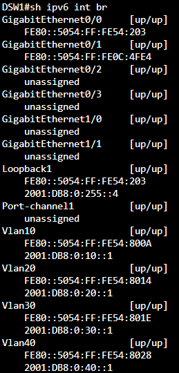
R1 has a global address only on its ISP link (Gi0/2) and its loopback:
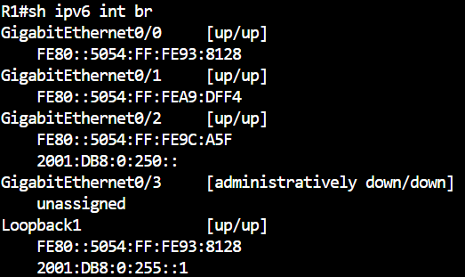
The /127 link to the ISP is up and the ISP side answers pings:
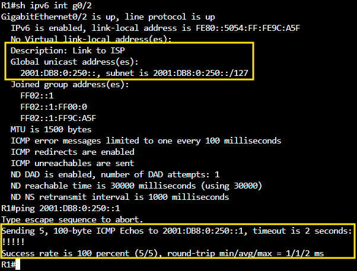
R1 reaches 1.1.1.1 and anything else behind the ISP with a static default route (the ISP router can't be changed):
ip route 0.0.0.0 0.0.0.0 172.16.1.2
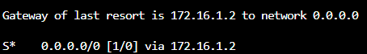
All VLANs, point-to-point links, and loopbacks must be reachable using a non-proprietary, fast-converging link-state protocol (OSPF) in a single area (area 0).
OSPF can be enabled per interface:
interface <interface> ip ospf 1 area 0
or with network statements:
router ospf 1 network <ip-address> <wildcard> area 0
On DSW1 and DSW2, every SVI is advertised:
interface range Vlan10, Vlan20, Vlan30, Vlan40 ip ospf 1 area 0
The distribution switches shouldn't form unnecessary adjacencies, so the user-facing VLANs are passive:
router ospf 1 passive-interface Vlan10 passive-interface Vlan20 passive-interface Vlan30
The core switches skip the DR/BDR election on their bundle and use fast hello/dead timers (5 s / 15 s):
interface Port-channel1 ip ospf network point-to-point ip ospf hello-interval 5 ip ospf dead-interval 15
ipv6 route ::/0 2001:db8:0:250::1
Each device uses its IPv4 loopback address as the router ID, and everything is in a single area:
ipv6 unicast-routing ipv6 router ospf 1 router-id <ipv4-loopback> interface <interface> ipv6 ospf 1 area 0
On DSW1 and DSW2, all SVIs and the loopback are in OSPFv3, with the user VLANs passive to avoid unneeded adjacencies:
ipv6 router ospf 1 passive-interface Vlan10 passive-interface Vlan20 passive-interface Vlan30
R1 advertises its default route into OSPFv3:
ipv6 router ospf 1 default-information originate
Users in VLAN 10 lost their gateway whenever DSW1 or DSW2 had stability issues. A virtual gateway, 10.0.0.3, fixes this. DSW1 is preferred and takes the role back when it recovers.
DSW1:
interface Vlan10 standby version 2 standby 1 ip 10.0.0.3 standby 1 priority 110 standby 1 preempt
DSW2:
interface Vlan10 standby version 2 standby 1 ip 10.0.0.3
DSW1 is Active with priority 110 and preempt:
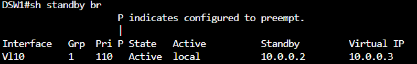
DSW2 is Standby:
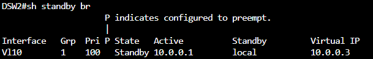
R1 hands out addresses for VLAN 10 and VLAN 20.
VLAN 10 — the HSRP virtual gateway, DNS 1.1.1.1, domain MYDOMAIN.LOCAL, and a 48-hour lease:
ip dhcp pool vlan10 network 10.0.0.0 255.255.255.128 default-router 10.0.0.3 dns-server 1.1.1.1 domain-name MYDOMAIN.LOCAL lease 2
VLAN 20 — includes TFTP server 10.0.0.135 (option 150) for the IP phones:
ip dhcp pool vlan20 network 10.0.0.128 255.255.255.192 default-router 10.0.0.129 option 150 ip 10.0.0.135
R1 isn't on the VLANs, so DSW1 and DSW2 relay DHCP requests to it:
interface Vlan10 ip helper-address 10.0.250.2
To test, H1 and H2 have routing disabled and run a DHCP client on startup:
ip link set dev eth0 up dhclient eth0
H1 received 10.0.0.4/25:
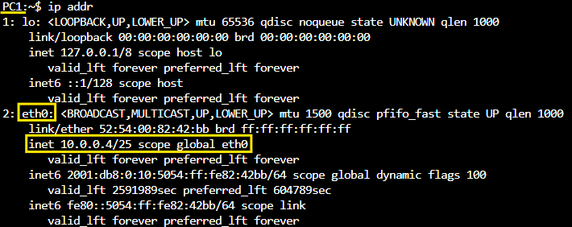
H2 received 10.0.0.5/25:
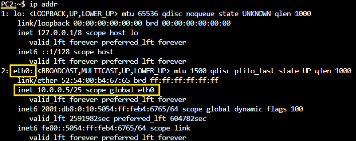
All campus switches and hosts need to reach 1.1.1.1. R1 overloads (PAT) the whole 10.0.0.0/8 range onto its ISP-facing address:
ip access-list standard NAT permit 10.0.0.0 0.255.255.255 interface <outside-interface-to-ISP> ip nat outside interface <inside-interface-to-campus> ip nat inside ip nat inside source list NAT interface <outside-interface-to-ISP> overload
H1 (10.0.0.4) is translated to 172.16.1.1 toward 1.1.1.1:
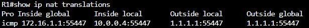
Logs were inconsistent across devices, so clocks are synced in a hierarchy that follows the topology.
| Device | NTP servers |
|---|---|
| R1 | 1.1.1.1 |
| CSW1, CSW2 | R1 (10.0.255.1) |
| DSW1 | CSW2 (10.0.255.3), CSW1 (10.0.255.2) |
| DSW2 | CSW1 (10.0.255.2), CSW2 (10.0.255.3) |
| ASW1 | DSW1 (10.0.255.4), DSW2 (10.0.255.5) |
| ASW2 | DSW2 (10.0.255.5), DSW1 (10.0.255.4) |
ntp server <server-ip>
R1 shows "Authorized users only" at login:
username admin secret <password> line con 0 login local banner login #Authorized users only#
CSW1 shows a MOTD:
banner motd #This is CSW1#
Only one MAC address is allowed, the first one learned is saved, and a violation shuts the port:
interface g1/0 switchport port-security switchport port-security maximum 1 switchport port-security mac-address sticky switchport port-security violation shutdown
Hosts in VLAN 10 can't reach the HTTP server on 1.1.1.1; all other traffic is allowed. Applied on DSW1 and DSW2, inbound on the VLAN 10 SVI so traffic is filtered as close to the source as possible:
ip access-list extended BLOCK-V10-HTTP deny tcp 10.0.0.0 0.0.0.127 host 1.1.1.1 eq 80 permit ip any any interface Vlan10 ip access-group BLOCK-V10-HTTP in
CSW1 accepts remote management over SSH only, with username cisco / password cisco (lab credentials). Telnet is blocked and passwords aren't stored in clear text.
username cisco privilege 15 secret cisco ip domain-name MYDOMAIN.LOCAL crypto key generate rsa modulus 2048 ip ssh version 2 service password-encryption line vty 0 4 login local transport input ssh
H1 connects to CSW1's loopback over SSH and sees the "This is CSW1" MOTD. IOSv only offers older key exchange and host key algorithms, so the Linux client has to allow them explicitly:
ssh -o KexAlgorithms=+diffie-hellman-group14-sha1 -o HostKeyAlgorithms=+ssh-rsa cisco@10.0.255.2
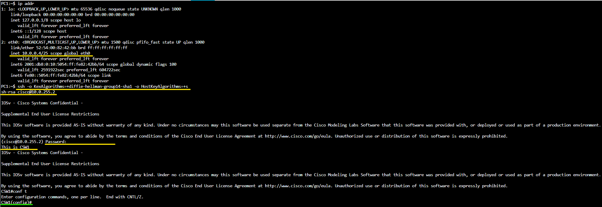
DSW1 sends logs to an external syslog server:
logging 10.0.0.240
Switches and R1 discover each other with CDP, sending every 5 seconds and discarding entries after 60 seconds:
cdp timer 5 cdp holdtime 60
CDP isn't sent to hosts or the ISP. On those interfaces:
no cdp enable
LLDP is turned on, but not used toward the distribution switches (CDP covers those). Toward hosts, the switch listens but doesn't advertise.
lldp run interface range g0/0-1 no lldp transmit no lldp receive interface g1/0 no lldp transmit
Uplinks Gi0/0-1 have Tx and Rx disabled, and host port Gi1/0 only receives:
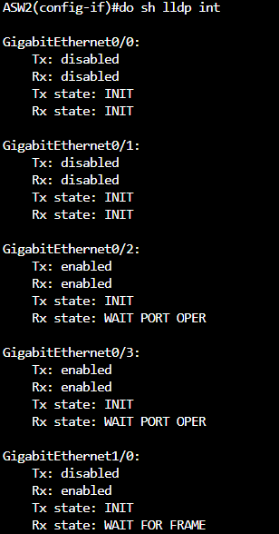
show vlan brief show interfaces trunk show etherchannel summary show spanning-tree brief show spanning-tree interface <int> detail show errdisable recovery show ip interface brief show ipv6 interface brief show ip route show ipv6 route show ip ospf neighbor show ipv6 ospf neighbor show standby brief show ip dhcp binding show ip nat translations show ntp associations show port-security interface g1/0 show access-lists show cdp neighbors show lldp interface
The CML topology for this lab can be imported into Cisco Modeling Labs: Network-Fundamentals-Lab.yaml
It includes all nodes and links with the completed configuration on R1 and every switch, the ISP router preconfigured (including the 1.1.1.1 loopback and NTP master), and the hosts set to use DHCP on boot.